ascp -QT -l 300m -P33001 -i $HOME/.aspera/connect/etc/asperaweb_id_dsa.openssh era-fasp@fasp.sra.ebi.ac.uk:/vol1/fastq/SRR104/060/SRR10416860/SRR10416860.fastq.gz .
ascp -QT -l 300m -P33001 -i $HOME/.aspera/connect/etc/asperaweb_id_dsa.openssh era-fasp@fasp.sra.ebi.ac.uk:/vol1/fastq/SRR104/061/SRR10416861/SRR10416861.fastq.gz .
ascp -QT -l 300m -P33001 -i $HOME/.aspera/connect/etc/asperaweb_id_dsa.openssh era-fasp@fasp.sra.ebi.ac.uk:/vol1/fastq/SRR115/069/SRR11553469/SRR11553469.fastq.gz .
ascp -QT -l 300m -P33001 -i $HOME/.aspera/connect/etc/asperaweb_id_dsa.openssh era-fasp@fasp.sra.ebi.ac.uk:/vol1/fastq/SRR104/057/SRR10416857/SRR10416857.fastq.gz .
ascp -QT -l 300m -P33001 -i $HOME/.aspera/connect/etc/asperaweb_id_dsa.openssh era-fasp@fasp.sra.ebi.ac.uk:/vol1/fastq/SRR104/056/SRR10416856/SRR10416856.fastq.gz .
ascp -QT -l 300m -P33001 -i $HOME/.aspera/connect/etc/asperaweb_id_dsa.openssh era-fasp@fasp.sra.ebi.ac.uk:/vol1/fastq/SRR104/058/SRR10416858/SRR10416858.fastq.gz .
ascp -QT -l 300m -P33001 -i $HOME/.aspera/connect/etc/asperaweb_id_dsa.openssh era-fasp@fasp.sra.ebi.ac.uk:/vol1/fastq/SRR104/059/SRR10416859/SRR10416859.fastq.gz .
ascp -QT -l 300m -P33001 -i $HOME/.aspera/connect/etc/asperaweb_id_dsa.openssh era-fasp@fasp.sra.ebi.ac.uk:/vol1/fastq/SRR115/070/SRR11553470/SRR11553470.fastq.gz .
ascp -QT -l 300m -P33001 -i $HOME/.aspera/connect/etc/asperaweb_id_dsa.openssh era-fasp@fasp.sra.ebi.ac.uk:/vol1/fastq/SRR115/068/SRR11553468/SRR11553468.fastq.gz .14 DENR promotes translation reinitiation
14.1 Intro
In this section, we demonstrate how to reproduce the findings of the 2020 Nature Communications publication titled “DENR promotes translation reinitiation via ribosome recycling to drive expression of oncogenes including ATF4” using the riboTransVis tool.
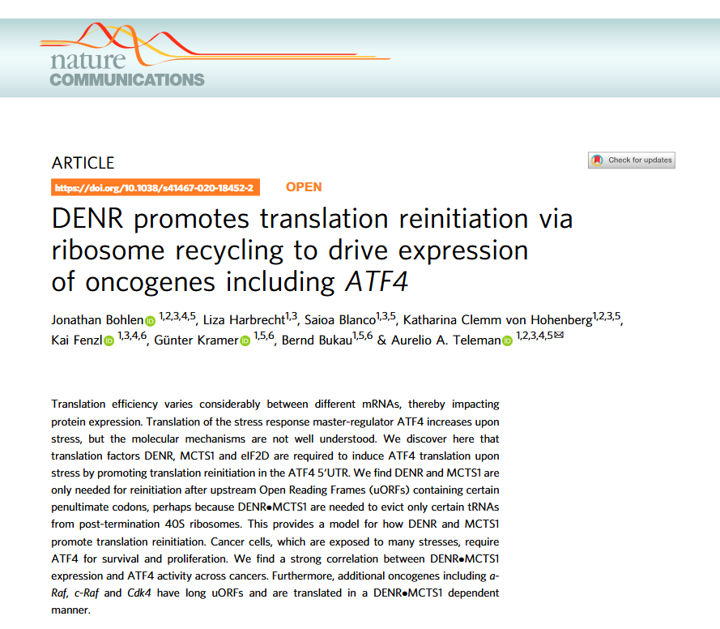
This study reveals that the translation factors DENR and MCTS1 are crucial for promoting translation reinitiation after certain upstream open reading frames (uORFs), especially under stress conditions. They enable efficient expression of key stress-response and cancer-related genes like ATF4 by recycling 40S ribosomal subunits on mRNAs with specific uORF features, notably certain penultimate codons that otherwise hinder ribosome recycling.
The authors show that without DENR or MCTS1, the translation of ATF4 and other oncogenes such as a-Raf, c-Raf, and CDK4 is significantly impaired. They also find a strong correlation between DENR-MCTS1 expression and ATF4 activity across various cancer types, suggesting a broader role in tumor progression and highlighting a potential therapeutic vulnerability.
14.2 Data download
To begin, we use the GEO accession number GSE140084 provided in the paper to download the raw FASTQ data from the GEO database. In this case, we focus only on downloading datasets related to 80S ribosome profiling and RNA-seq:
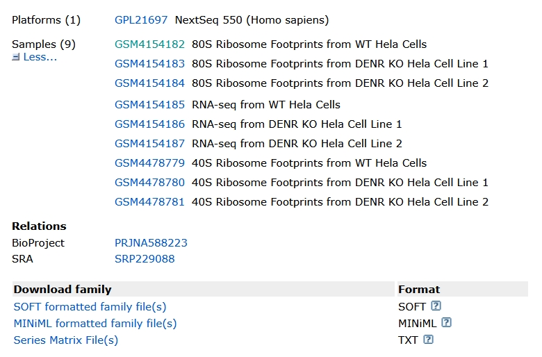
The Aspera download link is as follows:
14.3 Adapter trimming
First, we remove the universal adapter sequences:
# Remove universal adapter sequences
for i in SRR10416856 SRR10416857 SRR10416858 SRR10416859 SRR10416860 SRR10416861 SRR11553468 SRR11553469 SRR11553470
do
trim_galore -j 20 -q 25 --stringency 3 --length 25 \
-o ./ ../1.raw-data/${i}.fastq.gz
doneNext, we remove custom adapter sequences that were specifically added:
# Remove custom adapter sequences (e.g., 3' end clipping of 8 bases)
for i in SRR10416856 SRR10416857 SRR10416858 SRR10416859 SRR10416860 SRR10416861
do
trim_galore -j 20 -q 25 --stringency 3 \
--length 25 --three_prime_clip_R1 8 \
-o ./ ./trim1/${i}_trimmed.fq.gz
done14.3.1 Removing rRNA contamination
To eliminate reads originating from rRNA, we first download human rRNA sequences and build a Bowtie2 index. We then align each FASTQ file to the rRNA reference and retain only the reads that do not align (i.e., non-rRNA reads):
# Remove rRNA-mapped reads using Bowtie2
for i in SRR10416856 SRR10416857 SRR10416858 SRR10416859 SRR10416860 SRR10416861
do
bowtie2 -p 20 -x ../../index-data/human-rRNA-index/human-rRNA \
--un-gz ./${i}.rmrRNA.fq.gz \
-U ../2.trim-data/${i}_trimmed_trimmed.fq.gz \
-S ./null
done14.4 Alignment to reference
14.4.1 Alignment to the transcriptome
First, extract all transcript sequences from the reference genome and annotation files:
# Extract transcript sequences from genome and GTF annotation
get_transcript_sequence(
genome_file = "Homo_sapiens.GRCh38.dna.primary_assembly.fa",
gtf_file = "Homo_sapiens.GRCh38.94.gtf.gz",
output_file = "ribo_trans.fa"
)Next, build a HISAT2 index from the extracted transcript sequences:
# Build transcriptome index using HISAT2
hisat2-build -p 20 ./ribo_trans.fa hisat-index/transThen, align reads that have had rRNA removed to the transcriptome and sort the alignments:
# Align reads to transcriptome and sort alignments
for i in SRR10416856 SRR10416857 SRR10416858 SRR10416859 SRR10416860 SRR10416861
do
hisat2 -p 20 -x ../hisat-index/trans \
--summary-file ${i}.mapinfo.txt \
-U ../3.rmrRNA-data/${i}.rmrRNA.fq.gz \
| samtools sort -@ 20 -o ${i}.h2sorted.bam
done14.4.2 Alignment to the reference genome
To save time and computational resources, pre-built HISAT2 indices for the human genome can be downloaded from the HISAT2 official website.
Once the index is available, map the reads directly to the genome:
# Align to the human reference genome using a prebuilt index and sort alignments
for i in SRR10416856 SRR10416857 SRR10416858 SRR10416859 SRR10416860 SRR10416861
do
hisat2 -p 20 -x ../../index-data/grch38_hisat2_index/genome \
--summary-file ${i}.mapinfo.txt \
-U ../3.rmrRNA-data/${i}.rmrRNA.fq.gz \
| samtools sort -@ 20 -o ./genome/${i}.genome.bam
done14.5 Constructing the ribotrans object
In this step, we use BAM files aligned to the transcriptome to build a ribotrans object for downstream analysis:
# Set the working directory
setwd("~/junjun_proj/22.ribo_4060s/")
getwd()
# Install and load the riboTransVis package
devtools::install_github("junjunlab/riboTransVis", force = TRUE)
library(riboTransVis)
# Define sample names and their corresponding experimental groups
sp <- c("wt1", "wt2", "ko1", "ko2")
gp <- c("wt", "wt", "ko", "ko")
# Specify RNA-seq BAM file paths
rnabams <- c("./4.map-data/SRR10416859.h2sorted.bam",
"./4.map-data/SRR10416859.h2sorted.bam",
"./4.map-data/SRR10416860.h2sorted.bam",
"./4.map-data/SRR10416861.h2sorted.bam")
# Specify Ribo-seq BAM file paths
ribobams <- c("./4.map-data/SRR10416856.h2sorted.bam",
"./4.map-data/SRR10416856.h2sorted.bam",
"./4.map-data/SRR10416857.h2sorted.bam",
"./4.map-data/SRR10416858.h2sorted.bam")
# Construct the ribotrans object using transcriptome-aligned BAMs
obj <- construct_ribotrans(
gtf_file = "./Homo_sapiens.GRCh38.94.gtf.gz",
RNA_bam_file = rnabams,
RNA_sample_name = sp,
RNA_sample_group = gp,
mapping_type = "transcriptome",
assignment_mode = "end5",
Ribo_bam_file = ribobams,
Ribo_sample_name = sp,
Ribo_sample_group = gp,
choose_longest_trans = TRUE
)
# Generate summary statistics for visualization and analysis
obj <- generate_summary(
object = obj,
exp_type = "ribo",
nThreads = 40
)14.6 QC check
To inspect the distribution of read fragment lengths across samples, use the following code:
# Plot the distribution of read fragment lengths for each sample
length_plot(obj) +
scale_x_continuous(labels = scales::label_number(accuracy = 1)) +
facet_wrap(~sample, nrow = 2, scales = "free")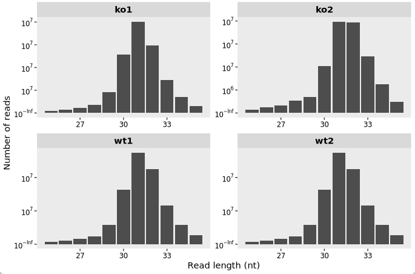
14.7 Metagene analysis
The ribosome occupancy around the start and stop codons as presented in the figure is derived from the data shown in the article:
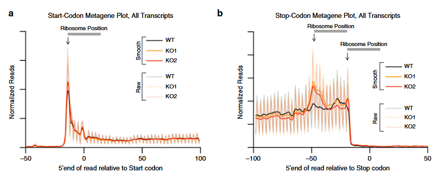
14.7.1 Nucleotide mode
To visualize ribosome occupancy profiles with single-nucleotide precision around the start and stop codons, use the code below:
# Meta-gene plot aligned to the start codon, at nucleotide (base-pair) resolution
mt1 <- metagene_plot(object = obj) +
geom_path(aes(color = sample))
# Meta-gene plot aligned to the stop codon, at nucleotide resolution
mt2 <- metagene_plot(object = obj, type = "rel2stop") +
geom_path(aes(color = sample))
# Load patchwork to combine the plots
library(patchwork)
# Display both plots side by side
mt1 + mt2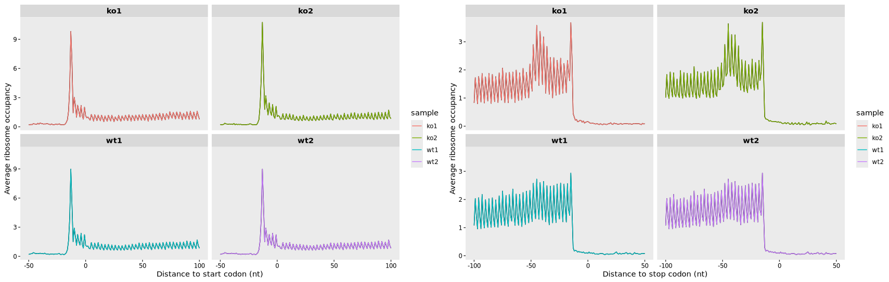
14.7.2 Codon mode
To display ribosome occupancy relative to the start and stop codons with codon-level resolution, use the following code:
# Create a meta-gene plot aligned to the start codon, shown at codon resolution
mt3 <- metagene_plot(object = obj,
mode = "codon",
rel2st_dist = c(-150, 500)) +
geom_path(aes(color = sample))
# Create a meta-gene plot aligned to the stop codon, shown at codon resolution
mt4 <- metagene_plot(object = obj,
type = "rel2stop",
mode = "codon",
rel2st_dist = c(-150, 500)) +
geom_path(aes(color = sample))
# Combine the two plots side by side
mt3 + mt4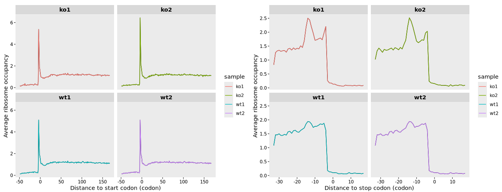
14.8 Track plot for single gene
The following track plot depicts ribosome occupancy indicating reinitiation at uORFs of representative genes upon DENR depletion, as reported in the study:
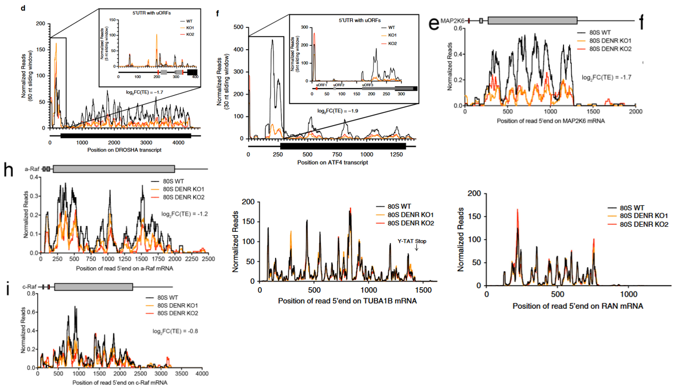
The plots were generated by first normalizing Ribo-seq and RNA-seq datasets to account for sequencing depth. Ribosome footprint densities were then adjusted based on mRNA expression levels to estimate translational efficiency at the transcript level. A smoothing algorithm (e.g., sliding window averaging) was applied to reduce noise and highlight translational features:
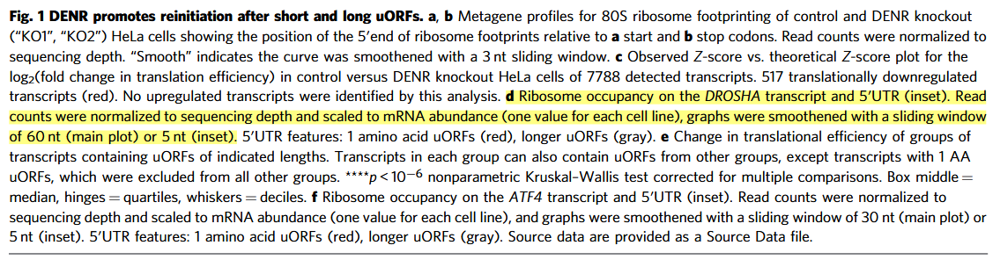
14.8.1 Track plot for RNA coverage
The get_coverage() function can extract read coverage data for a specified gene directly from BAM files and output the results as RPM (Reads Per Million) values:
# Specify the gene of interest
gene_name <- "DROSHA"
# Extract coverage data for the given gene from the BAM file
obj <- get_coverage(object = obj, gene_name = gene_name)
# Preview the resulting RNA-seq coverage table
head(obj@RNA_coverage)
# Output example:
# rname pos count rpm sample sample_group smooth
# 1 ENST00000511367|DROSHA 1 1 0.02683300 wt1 wt 0.02683300
# 2 ENST00000511367|DROSHA 2 1 0.02683300 wt1 wt 0.02683300
# 3 ENST00000511367|DROSHA 3 2 0.05366601 wt1 wt 0.05366601
# 4 ENST00000511367|DROSHA 4 2 0.05366601 wt1 wt 0.05366601
# 5 ENST00000511367|DROSHA 5 3 0.08049901 wt1 wt 0.08049901
# 6 ENST00000511367|DROSHA 6 6 0.16099802 wt1 wt 0.16099802You can visualize the coverage using the trans_plot() function:
trans_plot(object = obj, type = "rna")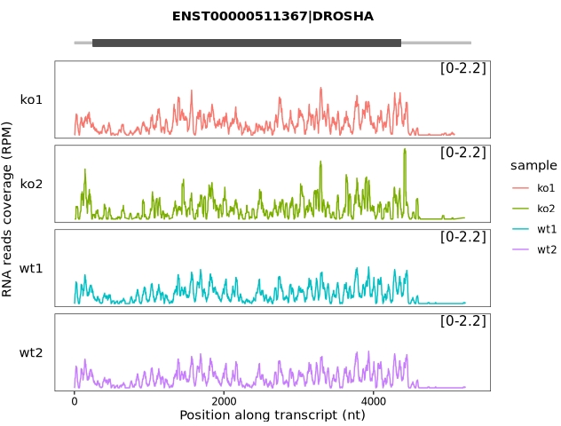
Apply a different track style for visualization:
trans_plot(object = obj, type = "rna", layer = "col")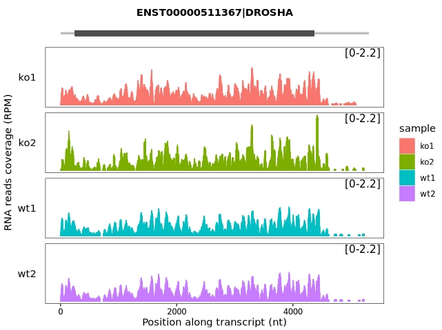
14.8.2 Track plot for ribosome occupancy
The get_occupancy() function retrieves ribosome-protected fragment (RPF) reads mapped to a specified gene from BAM files and calculates ribosome occupancy in units of RPM (Reads Per Million mapped reads):
# Specify the target gene (e.g., ATF4)
obj <- get_occupancy(object = obj, gene_name = gene_name)
# View the resulting ribosome occupancy data
head(obj@ribo_occupancy)
# A tibble: 6 × 7
# sample_group sample rname pos count rpm smooth
# <chr> <chr> <fct> <int> <int> <dbl> <dbl>
# 1 wt wt1 ENST00000337304|ATF4 3 1 0.0200 0.0200
# 2 wt wt1 ENST00000337304|ATF4 5 3 0.0600 0.0600
# 3 wt wt1 ENST00000337304|ATF4 6 3 0.0600 0.0600
# 4 wt wt1 ENST00000337304|ATF4 7 5 0.1000 0.1000
# 5 wt wt1 ENST00000337304|ATF4 8 11 0.2200 0.2200
# 6 wt wt1 ENST00000337304|ATF4 9 55 1.1000 1.1000Visualize the ribosome occupancy along the transcript:
trans_plot(object = obj, type = "ribo") +
trans_plot(object = obj, type = "ribo", layer = "col")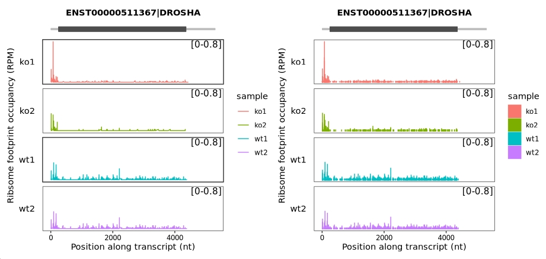
14.8.3 Scaled to mRNA abundence
The get_scaled_occupancy() function normalizes ribosome occupancy to mRNA expression by calculating, for each nucleotide position along a transcript, the ratio of ribosome occupancy (in RPM) to RNA-seq coverage (also in RPM). This returns a scaled occupancy value for each position, reflecting translation efficiency adjusted for mRNA abundance:
# Calculate scaled occupancy with smoothing enabled
obj <- get_scaled_occupancy(object = obj,
smooth = TRUE,
slide_window = 60)
# examine the scaled occupancy data
head(obj@scaled_occupancy)
# Output example:
# rname pos sample rpm.x rpm.y enrich smooth
# 1 ENST00000511367|DROSHA 1 wt1 0.00000000 0.000000 0.0000000 0
# 2 ENST00000511367|DROSHA 2 wt1 0.00000000 0.000000 0.0000000 0
# 3 ENST00000511367|DROSHA 3 wt1 0.00000000 0.000000 0.0000000 0
# 4 ENST00000511367|DROSHA 4 wt1 0.00000000 0.000000 0.0000000 0
# 5 ENST00000511367|DROSHA 5 wt1 0.00000000 0.000000 0.0000000 0
# 6 ENST00000511367|DROSHA 6 wt1 0.03998232 0.160998 0.2483405 0Parameter explanation:
smooth: Logical. When set to TRUE, applies smoothing to the position-wise scaled occupancy (rpm.ribo / rpm.rna) values.
slide_window: Integer. Specifies the width (in nucleotides) of the sliding window used for smoothing.
Visualize the data:
trans_plot(object = obj, type = "scaled_ribo")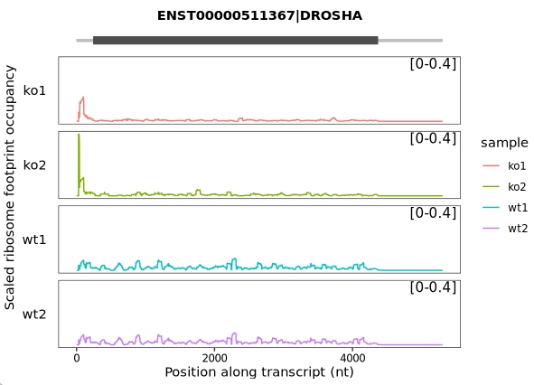
Combine the samples:
trans_plot(object = obj,
type = "scaled_ribo",
facet_layer = ggplot2::facet_grid(~rname,switch = "y"))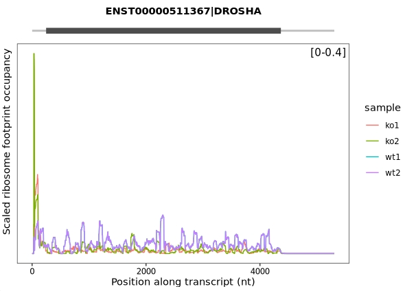
14.8.4 Batch track plot for multiple genes
To visualize ribosome occupancy tracks for several genes simultaneously, we performed a batch plot by looping through a selected list of genes. For each gene, we calculated RNA coverage, ribosome occupancy (RPM), and scaled ribosome density (occupancy normalized to mRNA abundance), followed by smoothed plotting:
# Gene list to be visualized
genes <- c("DROSHA", "ATF4", "TUBA1B", "RAN", "MAP2K6", "ARAF", "RAF1")
# Batch processing and plotting
plist <- lapply(seq_along(genes), function(x) {
obj <- get_coverage(object = obj, gene_name = genes[x])
obj <- get_occupancy(object = obj, gene_name = genes[x])
obj <- get_scaled_occupancy(object = obj,
smooth = TRUE,
slide_window = 60)
trans_plot(object = obj,
type = "scaled_ribo",
facet_layer = ggplot2::facet_grid(~rname, switch = "y"))
})
# Combine all gene plots into a single panel (2 columns)
cowplot::plot_grid(plotlist = plist, ncol = 2)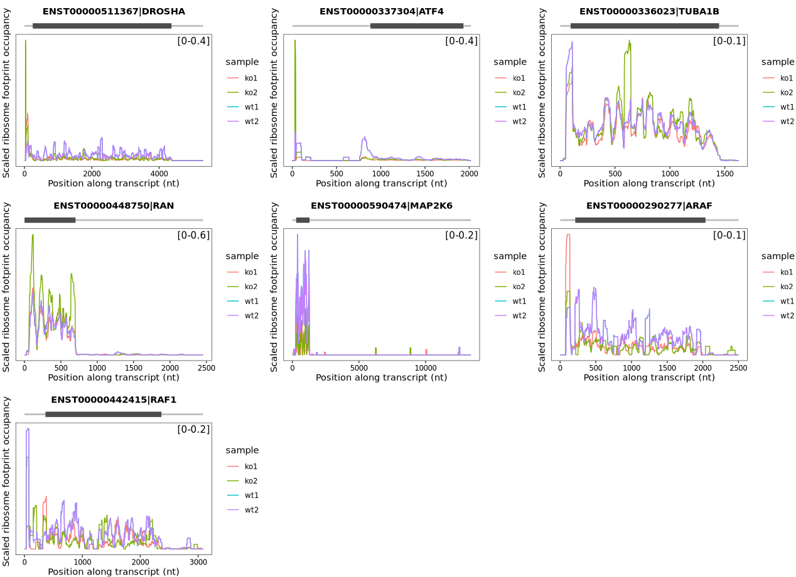